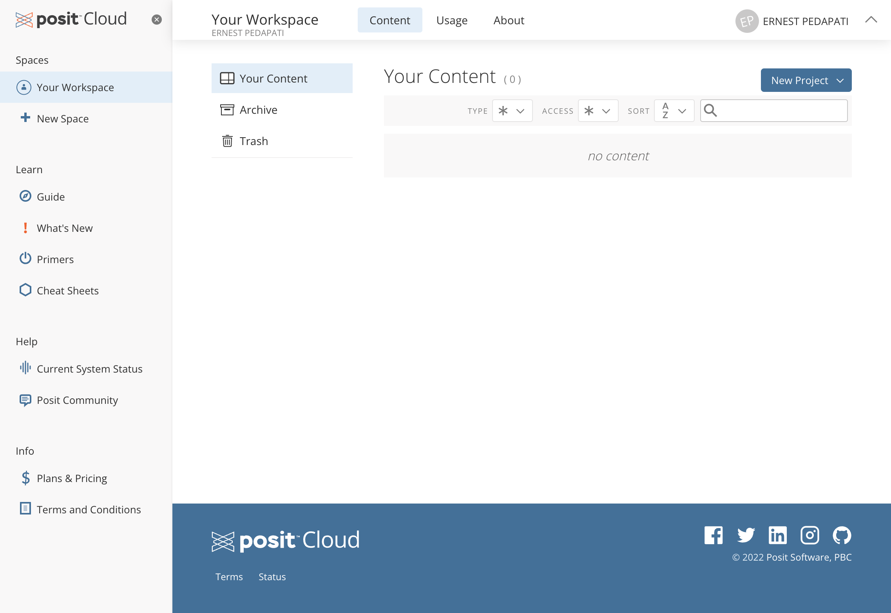

1 Getting Started
1.1 What is R?
Figure 1.1 AI-generated art capturing R statistics in the abstract
R is a free, open-source programming language and software environment specifically designed for statistical computing and graphics. Ross Ihaka and Robert Gentleman created R at the University of Auckland and it is now maintained by the R Development Core Team. R is essentially composed of a core language and a variety of user interfaces. The core language, often referred to as “base R”, is where all the computation and processing happens. The user interfaces, such as RStudio, provide an intuitive frontend where users write code, visualize data, and manage their workflows.
The idea for R came about when Drs. Ross Ihaka and Robert Gentleman were teaching an introductory statistics course and were unsatisfied with the statistical software available to them. They wanted to create a software that was free, user-friendly, and provided an effective way to teach their students statistics.
Interestingly, R is named partly after the first names of the two R authors (Robert and Ross) and partly as a play on the name of S, an influential statistical programming language at the time.
Since its creation, R has grown exponentially, with a vibrant community of users and developers from various fields like academia, industry, and data science. It’s maintained by a large, global group of volunteers who continually add to its capabilities by creating new packages.
1.2 Why R?
For those of us who’ve engaged with statistical analysis during our education or careers, the memory of installing a hard-to-get software replete with countless menus, allowing interaction primarily through mouse clicks, is all too familiar. Perhaps you ran various commands on data, or dove into different analyses, all while navigating through these menus and outputs. I recall those times vividly and suspect many of you have similar experiences.
R, to many, might initially appear as an obscure programming language tucked away in academia or tech-based industries.
But let me challenge your perception!
The very traits of R that lend it an air of obscurity are, in fact, its most significant assets.
1.3 Great things about R
You don’t have to install R:
Unlike traditional software, R doesn’t demand space on your computer. It runs smoothly in the cloud, making it accessible from anywhere, on any device. More importantly, the scripts, the ‘statistical documents’ you write in R, are not one-off commands. They are reusable, editable, and shareable pieces of code that capture your entire analytical process from start to finish.
R is free:
I still have bad memories of trying to find a student copy of an expensive statistics software I bought in college. The complete and latest R suite is free to run on the platform of your choice and the 100% cloud-based R-Studio has a generous amount of resources for their free plan.
Active and Friendly Community:
R has a large, active, and helpful user community. This means help is often readily available through online forums, blogs, and tutorials.
Narratives, not isolation:
Writing scripts in R provides a natural and coherent flow to your work, a linear narrative, if you will. Instead of isolated tables and analyses separated by an output window, you have a comprehensive, logical story.
Awesome outputs:
The table and graphics capabilities of R are second to none. Packages such as
flextableandggplot2provide advanced functionality for creating high-quality, customizable, and publication-ready graphics. You will quickly recognize in print and media that R is everywhere!
After spending some time with R, becoming familiar with its capabilities, and experiencing its versatility firsthand, you might find it hard to even recognize it compared to the statistical programs you used back in college.
1.4 Using RStudio Cloud
RStudio Cloud is a great tool that simplifies the process of setting up R. It allows you to run R directly from your web browser, eliminating the need to install software locally and handle any setup hassles. In 2023, RStudio was renamed Posit Studio and Posit Cloud but in this book, I will continue to refer to it as RStudio and RCloud.
Creating an Account
First, navigate to the RStudio Cloud website (https://rstudio.cloud/). If you don’t have an account yet, click on “Sign Up” to create one. Enter your details, then click “Register”. You’ll receive an email to confirm your account.
.png)
Creating a New Project
After you’ve logged in, you’ll see your RStudio Cloud workspace. Click on the “New Project” button to start a new R project. Enter a name for your project and then click on “Create Project”.

RStudio Cloud Interface
Now you’re inside the RStudio interface, running within your web browser. On the left, you’ll see the R console where you can enter R commands. The right panel contains tabs for plots, packages, help, and files. The top-left panel is for scripts or R Markdown files.
.png)
Writing and Running R Code
To start coding, click on the “File” menu, then “New File”, and then “R Script”. An editor will open where you can write your R code. After writing your code, you can run it by clicking on the “Run” button, or by pressing Ctrl+Enter (Cmd+Enter on Mac).
.png)
Run some practice code
Let’s test out your setup by printing “Hello World!”. In your empty script type
print("Hellow World!")`and click on the “Run” button..png)
Saving and Sharing Your Work
RStudio Cloud autosaves your work as you go, so you don’t have to worry about losing your code. If you want to share your project, click on the “Settings” gear icon in the top-right corner of the project, and set “Who can view this project” to “Everyone”. You can then share the URL of your project with others.
.png)
Congratulations! You’re now up and running with RStudio Cloud. You have a versatile, powerful tool at your fingertips, ready to tackle your data analysis needs.